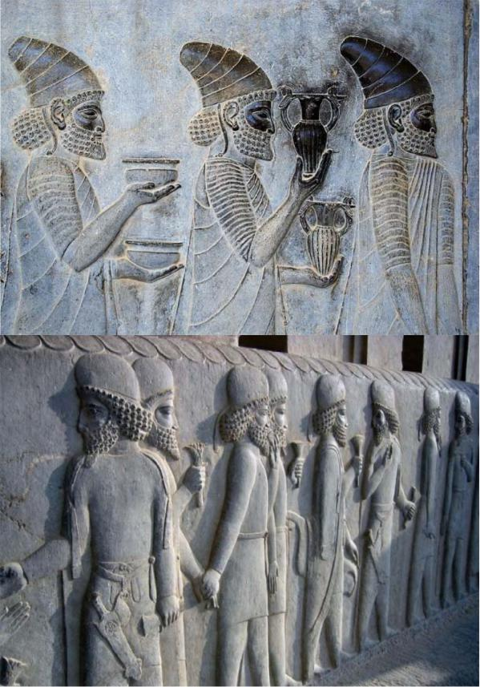

Dars-e 18 — Gomšode dar rāh
Matn ♫ Gomšode dar rāh
Yek ruz Sārā‐vo Faribā dāštand bā māšin be vilā‐ye dust‐ešān, ke xārej az šahr bud, miraftand. Dir‐i nagozašt, ke rāh‐ešān rā gom kardand. Ānhā be dehkade‐i residand, ke dar kenār‐e yek rudxāne bud. Az mard‐i ke āntaraf‐e xiyābān istāde bud, ādres‐ e mahall‐i rā porsidand, ke vilā‐ye dust‐ešān dar ānjā bud. Ān mard rāh rā be ānhā nešān dād. Ānhā az u tašakkor kardand va az masir‐i ke u be ānhā gofte bud, raftand va kam‐i ba’d be vilā residand.
Nokte
“*Dir‐i nagozašt*” ya’ni ziyād tul nakešid.
Pāsox bedeh!
1. Sārā‐vo Faribā kojā dāštand miraftand?
2. Ānhā key rāh rā gom kardand?
3. Ānhā be kojā residand?
4. Mard‐i ke az u ādres porsidand, kojā istāde bud?
5. Āyā masir‐i ke ān mard be ānhā goft, dorost bud?
6. Sārā‐vo Faribā key be maqsad‐e xod residand?
Sāxtār
Sāxtār 61 Ebārathā‐ye vasfi (vasf‐e fāel)
| Fāel | ‐i | ke Nemune | |
| Mard | ‐i | ke | ānjā istāde‐ast, ostād‐e man‐ast. |
| Muze | ‐i | ke | dar xiyābān‐e mā‐st, besyār jāleb‐ast. |
Nokte
- Dar injā “i” nešāne‐ye nesbat‐ast va mānand‐e nešāne‐ye nāmošaxxas tekye nadārad.
Sāxtār 62 Ebārathā‐ye vasfi (vasf‐e maf’ul)
| Maf’ul | ‐i | rā | ke | Nemune |
| Ketāb | ‐i | rā | ke | xaridam, hanuz naxānde‐am. |
| Matn | ‐i | rā | ke | mixānam, nemifahmam. |
Nokte
- Dar ebārathā‐ye vasfi‐ye bālā maf’ul‐e jomle bivāsete‐ast.
Irān‐o irāni Pārse (Taxt‐e Jamšid)
Goftogu Ce model‐i barā tun bezanam?
Mānand‐e nemune jomle besāz!
- Ān doxtar šāgerdavval‐e kelās‐ast. Ān doxtar emruz be dāneškade nayāmade‐ast. Doxtar‐i ke šāgerdavval‐e kelās‐ast, emruz be dāneškade nayāmade‐ast. 2. In bacce gerye mikonad. In bacce deldard dārad.
__
- Dišab šām‐e xošmaze‐i xordim. Ān rā dorost kon!
__
- Be man ketāb dādi. Ān rā hanuz naxānde‐am.
__
- Dar ān xāne si sāl zendegi karde budim. Xāne rā foruxtim.
__
- Ān ostād diruz be injā āmad. U emruz bar migardad.
__
- Hafte‐ye piš yek boluz xaridam. Ān rā be dust‐am hedye dādam.
__
- Howle rā be man dādi. Kenār‐e dastšuyi āvizān kardam.
__
- Ān pesar šalvārjin pušide‐ast. U rā mišenāsi?
__
- Moallem dar dabestān dars midād. Al’ān bikār‐ast.
__
- Āpārtemān rā xarid. Pārking‐o anbāri nadārad.
__
- Ta’mirkār otomobil‐am rā ta’mir kard. Az vasāyel‐e naqliye‐ye omumi estefāde mikonad.
__
- Ān sāat rā xarāb kardi. Ān sāat yādgāri‐ye mādar‐am bud.
__
- In tim barande‐ye in mosābeqe‐ast. In tim bāzande‐ye mosābeqe‐ye hafte‐ye piš bud.
__
Irān‐o irāni – Pārse (Taxt‐e Jamšid)
 Dar 64‐kilumetri‐ye šomāl‐e Širāz bāqimānde‐ye kāxhā‐ yi rā mibinim, ke az zamān‐e Haxāmanešiyān, ya’ni taqriban 2,500 sāl‐e piš, barjā mānde‐and. Majmue‐ye in kāxhā Pārse yā Taxt‐e Jamšid nām dārad. Jahāniyān ān rā be nām‐e Perspolis mišenāsand. In kāxhā az šāhkārhā‐ ye me’māri dar jahān‐e bāstān mahsub mišavand. Pāyegozār‐e in majmue Dāryuš‐e Bozorg bud. Šāhanšāhān‐e pas az u, beviže Xašāyāršā, ān rā takmil kardand. Pārse talfiq‐i bihamtā az anāsor‐e gunāgun‐e me’māri‐yo honari‐ye besyār‐i az mellathā‐ye jahān‐e bāstān‐ast.
Dar 64‐kilumetri‐ye šomāl‐e Širāz bāqimānde‐ye kāxhā‐ yi rā mibinim, ke az zamān‐e Haxāmanešiyān, ya’ni taqriban 2,500 sāl‐e piš, barjā mānde‐and. Majmue‐ye in kāxhā Pārse yā Taxt‐e Jamšid nām dārad. Jahāniyān ān rā be nām‐e Perspolis mišenāsand. In kāxhā az šāhkārhā‐ ye me’māri dar jahān‐e bāstān mahsub mišavand. Pāyegozār‐e in majmue Dāryuš‐e Bozorg bud. Šāhanšāhān‐e pas az u, beviže Xašāyāršā, ān rā takmil kardand. Pārse talfiq‐i bihamtā az anāsor‐e gunāgun‐e me’māri‐yo honari‐ye besyār‐i az mellathā‐ye jahān‐e bāstān‐ast.
Masāhat‐e in majmue 125,000 m2‐ast, ke nešān az azemat ān dārad. Ma’ruftarin banāhā Kāx‐e Āpādānā, Kāx‐e Sadsotun va Darvāze‐ye Melal hastand. Bar divārhā va pellekānhā‐ye in majmue tasāvir‐e barjeste‐i rā mibinim, ke mā rā bā mardomān‐e moxtalef‐e šāhanšāhi āšnā mikonand. Hamconin sangneveštehā‐yi rā miyābim, ke azjomle be xatt‐e pārsi‐ye bāstān gušehā‐yi az tārix‐e Irān rā bāzgu mikonand. Yek‐i az cizhā‐yi ke jalb‐e tavajjoh mikonad, feqdān‐e tasāvir‐e jang‐o xunrizi‐st. In majmue be nahv‐i solh‐o ārāmeš‐e mardomān rā be tasvir mikešad.
Eskandar‐e Maqduni dar sāl‐e 330 p.m. Pārse rā be ātaš kešid. Dar kāvošhā‐ye bāstānšenāsān dar sālhā‐ye 1930‐39 m. asnād‐i be dast āmadand, ke ettelāāt‐e mohemm‐i rā dar bāre‐ye ān dowrān be dast‐e mā midehand. In asnād beviže bar jāygāh‐e vālā‐ye zanān dar zamān‐e Haxāmanešiyān govāhi midehand. Zanān az conān jāygāh‐i barxordār budand, ke pāre‐i az pažuhešgarān‐o tārixdānān hattā az barābari‐ye zan‐ o mard soxan miguyand. In dar hāl‐i‐st ke dar ān zamān, va hattā moddathā pas az ān, zanān dar sāyer‐e noqāt‐e jahān yā barde be hesāb miāmadand yā az hoquq‐e nāciz‐i barxordār budand.
Pāsox bedeh!
- Majmue‐ye Pārse kojā qarār dārad? 2. Qedmat‐e ān taqriban cand sāl‐ast? 3. In majmue rā ke sāxt? 4. Ma’ruftarin banāhā‐ye Pārse kodām and? 5. Ceciz dar naqšhā‐ye ru‐ye divārhā‐vo pellekānhā jalb‐e tavajjoh mikonad? 6. Asnād‐e bedastāmade dar Pārse dar bāre‐ye zanān az ce hekāyat mikonand?
Goftogu – Ce model‐i barā tun bezanam?
Ārāyešgar:Befarmāyin!
Moštari:Mixāstam muhā‐m‐o kutā konam.
Ārāyešgar:Ce model‐i barā‐tun bezanam?
Moštari:Lotfan pošt‐o baqalā ro hesābi kutā konin, vali jolow ziyād kutā naše.
Ārāyešgar:Mixāyn surat‐etun‐am eslā konam?
Moštari:Bale, lotfan.
– – – – – – – – – –
Ārāyešgar:Sešuār‐am bekešam?
Moštari:Bale, age zahmat‐i nist.
– – – – – – – – – –
Ārāyešgar:Besyār xob. Befarmāyin, tu āyne negāh konin. Pošt‐eš xub‐e?
Moštari:Bale, dast etun dard nakone. Ceqad taqdim konam?
Ārāyešgar:Qābel‐i nadāre. Cāhār‐o punsad.
Nokte
- “Ceqad taqdim konam?” ya’ni “Ceqadr pardāxt konam?”
Nokte
| Goftāri | Neveštāri | |
| befarmāyin | befarmāyid | |
| muhā‐m‐o | muhā‐yam rā | |
| kutā | kutāh | |
| barā‐tun | barā‐yetān | |
| baqalā | baqalhā | |
| naše | našavad |
| mixāyn | mixāhid |
| surat‐etun‐am | surat‐etān rā ham |
| eslā | eslāh |
| sešuār‐am | sešuār ham |
| age | agar |
| xob | xub |
| dige | digar |
| tu āyne | tu‐ye/dar āyine |
| konin | konid |
| pošt‐eš | pošt‐aš |
| xub‐e | xub‐ast |
| dast‐etun | dast‐etān |
| nakone | nakonad |
| nadāre | nadārad |
| cāhār‐o punsad | cāhār hezār‐o pānsad |
Ebārathā/vāžehā
Mixāstam muhā‐m‐o kutā konam – mixāstam muhā‐m‐o fer bezanam
Vaqt‐e qabli gereftin? – qablān vaqt gereftin?
Ceqad kutā beše? – Fer‐e riz yā fer‐e dorošt?
Sešuār‐am bekešam? – Abruhā‐tun‐am morattab konam?
Bā estefāde az ebārathā/vāžehā goftogu‐ye bālā rā bā hamkelāsi‐yat tamrin kon! Goftogu‐ye behamrixte rā morattab kon va be zabān‐e neveštāri benevis!
– Muhā‐tun‐o ke qabl‐eš rang nakardin, bale?
– Fer‐e dorošt.
– Mixāstam muhā‐m‐o fer bezanam.
– Bale.
– Fer‐e riz yā fer‐e dorošt?
– Cetowr mage?
– Qablan vaqt gereftin?
– Con ru rang nemiše fer zad.
__
__
__
__
__
__
__
__
Vāžehā-ye dars-e
Pasoxhā-ye dars-e
Mānand‐e nemune jomle besāz!
2. Bacce‐i ke gerye mikonad, deldard dārad. – 3. Šām‐e xošmaze‐i rā ke dišab xordim, dorost kon! – 4. Ketāb‐i rā ke be man dādi, hanuz naxānde‐am. – 5. Xāne‐i rā ke dar ān si sāl zendegi karde budim, foruxtim. – 6. Ostād‐i ke diruz be injā āmad, emruz bar migardad. – 7. Boluz‐i rā ke hafte‐ye piš xaridam, be dust‐am hedye dādam. – 8. Howle‐i rā ke be man dādi, kenār‐e dastšuyi āvizān kardam. – 9. Pesar‐i rā ke šalvārjin pušide‐ast, mišenāsi? – 10. Moallem‐i ke dar dabestān dars midād, al’ān bikār‐ast. – 11. Āpārtemān‐i rā ke xarid, pārking‐o anbāri nadārad. – 12. Ta’mirkār‐i ke otomobil‐am rā ta’mir kard, az vasāyel‐e naqliye‐ye omumi estefāde mikonad. – 13. Sāat‐i rā ke xarāb kardi, yādgāri‐ye mādar‐am bud. – 14. Tim‐i ke barande‐ye in mosābeqe‐ast, bāzande‐ye mosābeqe‐ye hafte‐ye piš bud.
Goftogu‐ye behamrixte rā morattab kon va be zabān‐e neveštāri benevis!
– Mixāstam muhā‐yam rā fer bezanam.
– Qablan vaqt gereftid?
– Bale.
– Fer‐e riz yā fer‐e dorošt?
– Fer‐e dorošt.
– Muhā‐yetān rā ke qabl‐aš rang nakarde‐id, bale?
– Cetowr magar?
– Con ru‐ye rang nemišavad fer zad.
a’sār возраст ālgoritm алгоритм alkol алкоголь andiše мысль; идея arz ширина, широта, валюта arzeš значение, цена asid кислота az miyān-e через, среди ba’di следующий, последующий bābā папа bāje счетчик bālā raftan (rav, row) расти, подниматься bānk банк barjāy gozāštan (gozār) отпуск bayān kardan (kon) выразить, сказать cekpul дорожный чек dāneš знание, наука dānešnāme энциклопедия daqiq точный dastbekār šodan (šav, šow) начать работать dastekam-at как минимум, по меньшей мере elm наука emruzi современный entezār ожидание eskenās банкнота, бумажные деньги eslāh коррекция ettefāqi случайный falsafi философский gāhšomāri календарь gozāšte прошлое gugerd сера hakimāne мудрый hamcon как harif противник, конкурент hendi хинди, индийский, Индус jabr алгебра joqrāfi география joqrāfidān географ jowhar вещество, чернила, кислота kašf открытие kašf kardan (kon) выяснить, обнаружить kollan в целом, полностью lahze момент larzidan (larz) дрожать Lātin латинский, латинянин logāritm логарифм ma’danšenāsi минералогия mafāhim понятия mahd колыбель me’yār стандарт, критерий montazer šodan (šav, šow) ждать movāfeq budan (hast; bāš) согласны movarrex историк nāmidan (nām) обозначать, именовать, звать navābeq гении negāh kardan (kon) смотреть nerx ставка, обменный курс nesbat dādan (deh) приписывать nozul kardan (kon) тонуть olum науки pažuheš исследование, изучение pāyin āmadan (ā) падать, тонуть pur сын pušide покрытый, изношенный qavi сильный qeymat цена Qorun-e Vostā средневековье qowl dādan (deh) обещание rad šodan (šav, šow) пройти, потерпеть неудачу resāle трактат, диссертация riyāzidān математик riše корень robāiyāt четверостишия sāde простой šāns āvardan (āvar) иметь удачу, эрг. везти šāxe ветвь šerkat kardan (kon) участвовать setārešenās астроном šimidān химик šoluq шумный, шумно ta’lif kardan (kon) составлять, писать tabdil kardan (kon) обменять, преобразовать talaffoz произношение taqvim календарь taraqqi kardan (kon) расти, прогрессировать xadamāt-e arzi услуги обмена валюты xalvat пустой, пустынный yax zadan (zan) замораживаться zaif слабый zamine тема, контекст